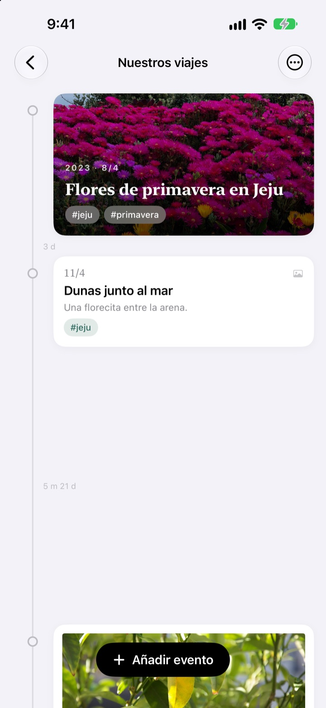
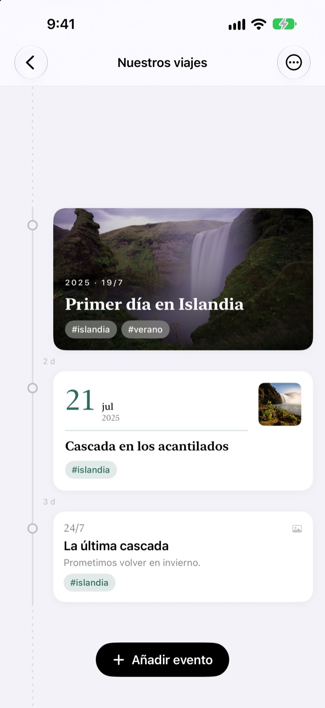
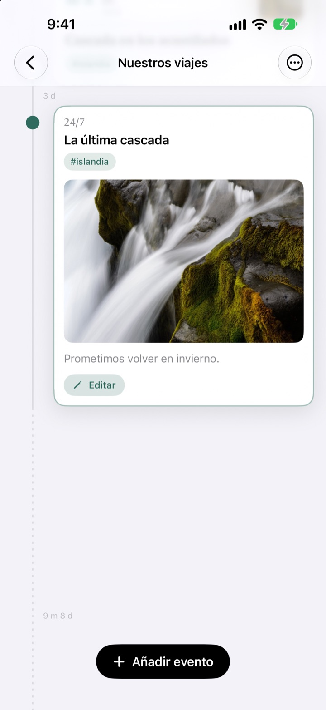
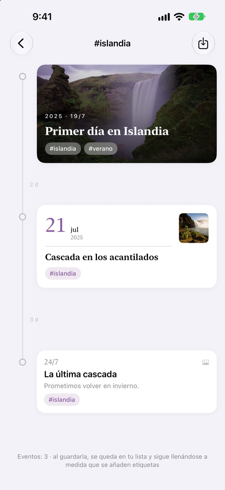
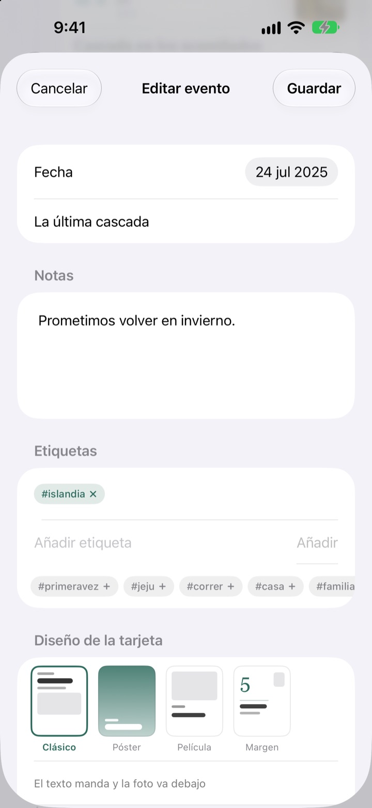

Una línea de tiempo
que se estira con el tiempo
Tres días y cinco días quedan separados 3 a 5. Una pausa larga, como dos años y cuatro meses, se pliega en una línea punteada. Solo con ver el espacio ya sabes cómo pasó el tiempo.
Todas las funciones son gratis. Para iPhone y iPad.

Estira los espacios tú mismo
Cada botón añade un evento después del último. El espacio sigue la misma regla que la app.
Tu fototeca no te enseña el tiempo
La fototeca lo ordena todo por fecha, pero tres días y dos años ocupan el mismo hueco. Yeoul separa los eventos según el tiempo que pasó entre ellos, así ves de un vistazo qué temporadas fueron intensas y cuáles tranquilas.
El espacio es el tiempo
Toda la línea usa una sola escala: el mismo periodo mide lo mismo en cualquier parte de la pantalla. Cada espacio lleva su duración real, como 3 d o 5 m 21 d.
Los eventos muy cercanos conservan un poco de aire y las pausas muy largas se pliegan en una línea punteada.

Encuentra las fotos de ese día
Elige la fecha del evento y toca Buscar fotos relacionadas para ver las fotos que hiciste ese día. ¿Ninguna te convence? Con Buscar yo mismo eliges otra.
Toca un evento en la línea y su foto y su historia se abren ahí mismo.

Una etiqueta junta momentos dispersos
Ponle a tus eventos una etiqueta como #Islandia, tócala y todos los eventos con ella, de todas tus líneas, se reúnen en una nueva.
Guárdala y se queda en tu lista, sumando sola los eventos que etiquetes después.

Una tarjeta a la medida de cada momento
Clásico pone el texto primero, Póster llena la tarjeta con la foto, Película la enmarca como una copia en papel y Margen deja que una fecha grande sea la protagonista. La vista previa cambia al instante.

Empieza en tres pasos
- 1
Crea una línea de tiempo
El primer año de tu bebé, una relación, un viaje: cada una con su nombre y su color.
- 2
Añade eventos
Escribe la fecha y el título, y añade una foto de ese día.
- 3
Etiquétalos
Los eventos con la misma etiqueta se reúnen aunque estén en líneas distintas.
Cuatro diseños de tarjeta
- Clásico
- El texto manda y la foto va debajo.
- Póster
- La foto llena la tarjeta y encima va un título grande. Sin foto, se rellena con el color de la línea.
- Película
- Una foto con borde como una copia en papel, letra de máquina de escribir y sello de fecha.
- Margen
- Un número de fecha grande y una foto pequeña. Aquí las palabras son las protagonistas.
Un evento nuevo empieza con el diseño de la tarjeta más reciente de su línea.
Todas las funciones son gratis
Gratis
- Todas las líneas de tiempo que quieras, con nombre y color
- Fotos, historias y etiquetas en cada evento
- Buscar las fotos del día del evento
- Líneas de tiempo de etiquetas guardadas
- Cuatro diseños de tarjeta
- Sincronización con iCloud entre iPhone y iPad
- Registrar con Atajos y Siri
Apoya al desarrollador
- Elige una propina pequeña, mediana o grande
- No desbloquea nada. Es solo una forma de dar las gracias
Está en los ajustes de la app, para cuando te apetezca.
Sin anuncios ni suscripciones.
Preguntas frecuentes
¿Por qué los espacios entre eventos son tan distintos?
Yeoul separa los eventos según el tiempo que pasó de verdad. Todos los espacios usan la misma escala, así que tres días y cinco días quedan 3 a 5. Los eventos muy cercanos mantienen un espacio mínimo para no solaparse, y las pausas muy largas se pliegan en una línea punteada con su duración real, como 2 a 4 m.
No veo las fotos de ese día.
Para buscar fotos por fecha hace falta acceso a tus fotos. Actívalo en Ajustes > Yeoul > Fotos. Yeoul busca las fotos hechas de medianoche a medianoche de ese día, según la zona horaria del dispositivo. Si prefieres no dar acceso, toca Buscar yo mismo justo debajo.
¿Qué es una línea de tiempo de etiquetas?
Toca la etiqueta de un evento y Yeoul reúne en una sola línea todos los eventos que la llevan, de todas tus líneas. Las que mires a menudo puedes guardarlas en tu lista. No se copia nada: si editas el evento original, el cambio se ve aquí, y si borras la línea de etiquetas, los eventos siguen donde estaban.
¿Por qué no puedo añadir eventos en una línea de etiquetas?
Una línea de etiquetas es una vista reunida por etiqueta, no un contenedor, así que no habría forma de saber a qué línea pertenece el evento nuevo. Añádelo en su propia línea con la etiqueta y aparecerá aquí solo.
¿Puedo registrar algo sin abrir la app?
Sí. Usa Registrar un evento en la app Atajos o con Siri y elige solo la línea y el título. Si no pones fecha, se guarda con la hora actual.
¿Puedo ver mis líneas en otros dispositivos?
Sí, en cualquier iPhone o iPad con sesión en iCloud con la misma cuenta de Apple. Comprueba en Ajustes > tu nombre > iCloud que iCloud esté activado. Según la conexión, los cambios pueden tardar un poco.
¿Cómo borro mis registros?
Desliza una línea hacia la izquierda en la lista o toca Editar. Al borrar una línea también se borran sus eventos. Lo que quede en iCloud lo puedes eliminar desde la gestión del almacenamiento en los ajustes de iCloud.
¿El desarrollador ve mis registros?
No. Tus registros y fotos se guardan solo en tus dispositivos y en tu propio iCloud, y el desarrollador no puede verlos. Tienes los detalles en la política de privacidad, más abajo.
¿Cómo aviso de un error o propongo una idea?
Desde los ajustes de la app, por correo o por Instagram en @lee25_ios. Si nos cuentas el modelo del dispositivo, la versión de iOS y qué pasó, podremos ayudarte antes.
¿Dudas o sugerencias? Escríbenos a leeo@kakao.com.